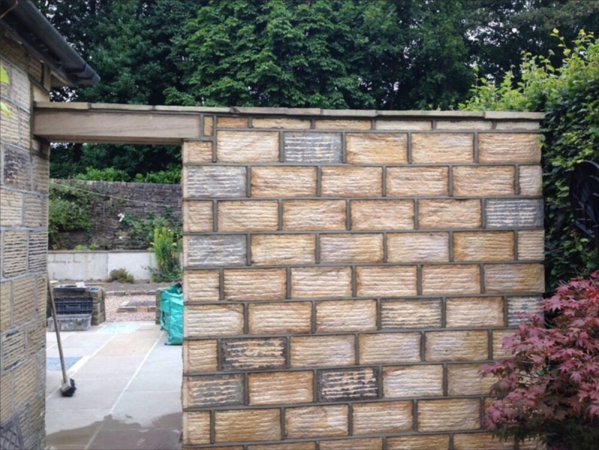

Stone Walls & Walling
Rebuilt and new stone walls, reusing original stone to keep everything in character.
K.Hall Landscapes and Building — a friendly, reliable Otley firm doing stone walls, driveways, hard landscaping, groundworks, joinery and building work. No job too big or small.
What We Do
One friendly, reliable team for the whole job — no job too big or small.
Rebuilt and new stone walls, reusing original stone to keep everything in character.
New driveways and paving — excavated, prepared and laid properly, and cleared up after.
Patios, steps, retaining walls and full garden transformations, planned and built to last.
Excavation, bases, drainage and site clearance — the groundwork that everything else stands on.
Joinery and general building work as part of the job — from small repairs to bigger builds.
The odd jobs and smaller tasks around the house and garden that never quite get done.

About K.Hall
K.Hall Landscapes and Building is run by Kyle and his team out of Otley. A friendly and reliable company that undertakes many aspects of building, joinery, hard landscaping, groundworks and handyman services — no job too big or small.
Our Work
Stone walls, driveways and groundworks — straight from the K.Hall MyBuilder portfolio.
In Their Own Words
A few of the 29 verified reviews on MyBuilder.
★★★★★Rebuild stone garden wall
"Kyle and Kieran did a first-rate job for us — we're very happy with the wall they rebuilt. They removed all the waste and left the garden clean and tidy."
— Darren, Pudsey · MyBuilder
★★★★★Concrete driveway repair
"Kyle paved a section of my driveway. He listened to our requirements and advised on the best options. He and his team arrived on time, completed the work in one day and left the area pristine. Very happy."
— Verified reviewer, Leeds · MyBuilder
★★★★★New driveway with planning
"I asked Kyle to knock down a 12-metre wall, excavate and rebuild it further in for a new driveway. Kyle and his guys did a great job — showed up early and left late every day, and reused the old stone to keep it in character. A pleasure to deal with."
— Garry, Shipley · MyBuilder
★★★★★New-build garden clearout
"Very thorough and straight to it. Easy to converse with and always responded in a timely manner with questions answered. Job completed to a high standard — would recommend."
— Stephen Wales, Bradford · MyBuilder
5 / 5 across 29 reviews on MyBuilder
Read all 29 reviews on MyBuilder →Good to Know
Anything else, just message us through MyBuilder — happy to talk it through first.
Get a Free QuoteNo — quotes are free and no-obligation. We'll come and look at the job and give you a straight price.
Otley and across West Yorkshire — Leeds, Bradford, Shipley, Pudsey and the surrounding area. Our reviews come from customers right across the region.
No — from a single stone wall or a bit of handyman work to a full driveway with planning and groundworks, we take it all on.
Always. Customers regularly mention that we remove all waste and leave the site clean and tidy.
Message K.Hall through MyBuilder and Kyle will get back to you to arrange a look at the job.
Where We Work
Based in Otley and working across Leeds and West Yorkshire — Pudsey, Shipley, Bradford, Guiseley and the surrounding area. Not sure if you're covered? Just ask.
Get In Touch
Fill in the form and we'll get back to you — or message K.Hall directly through MyBuilder.